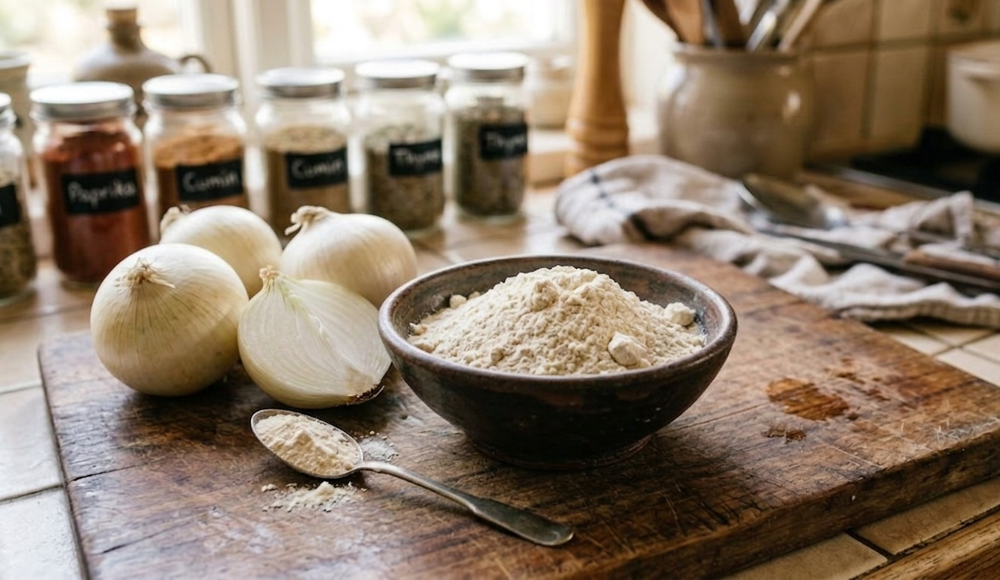

Dehydrated White Onion Powder
Processed from the finest white onions, this powder offers a mild, sweet flavor. It is the preferred choice for white gravies and gourmet seasonings in the **Dubai & Bahrain** hospitality sectors.
Color: Creamy White
Shelf Life: 12-18 Months
MOQ: 500 kg
Certificates: ISO, FSSAI, Phytosanitary, COA
- Free-flowing texture with no clumping
- Perfect for soups, sauces, and mayonnaise manufacturing
- Highly popular in European and Gulf markets